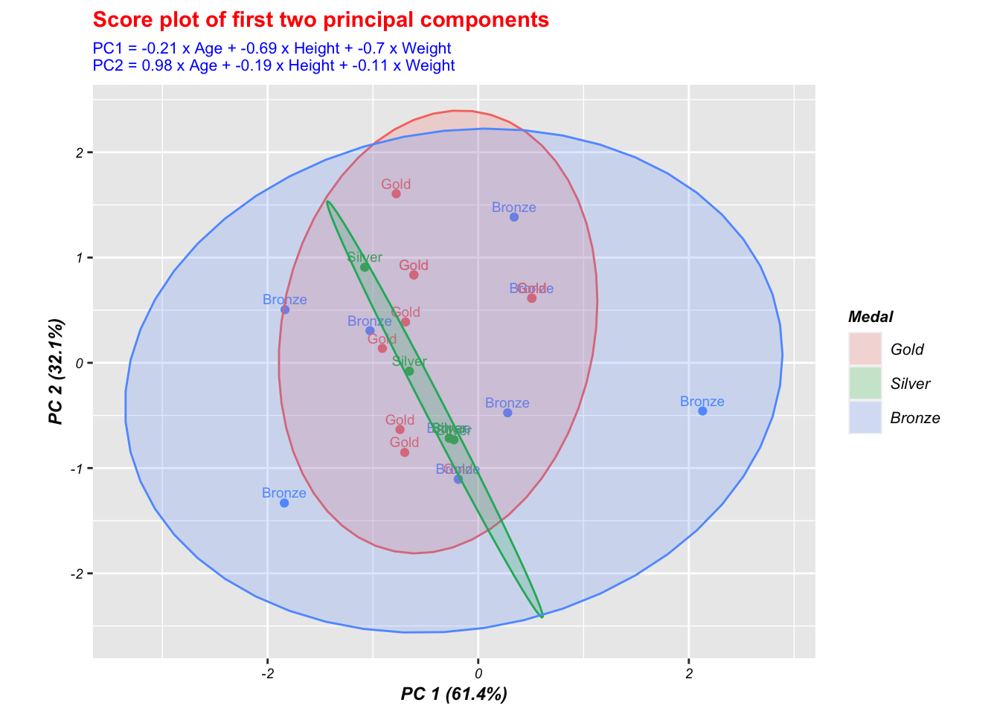

Chapter 5 Results
5.1 Q1: As economics exploded, what was the development of the 120 years Olympics from 1986 to 2016?
5.1.1 Graph 1: The Development of Olympics based on Year
These graphs are drawn from 3 different aspects over the Olympics movement, which include the total number of athletes, the total anticipated teams and the number of different sports. Since there are Summer Olympics and Winter Olympics, two lines of each season were graphed.

These graph have two interesting highlights:
First, According to the data resource page, there are two gap periods in which the Olympics games were not held. The first period is World War I, from 1912 to 1920, and the second period is World War II, from 1936 to 1948.
Second, there are several drop points during the history of Summer Olympics:
L.A.1932: The Games location was far away from the athletes and it was in the midst of the Great Depression, so many athletes were unable to afford the trip to attend.
Melbourne 1956: There were several boycotts. First, Egypt, Iraq, Cambodia and boycotted due to the Suez Crisis when Egypt was invaded by Israel, the UK and France. Second, The Netherlands, Spain and Switzerland boycotted in protest at the Soviet Union. Third, China boycotted the event because Taiwan had been allowed to compete.
Montreal 1976: 29 countries boycotted the Games due to the refusal of the IOC to ban New Zealand, after the New Zealand national rugby union team had toured South Africa earlier in 1976.
Moscow 1980: 66 countries boycotted the Games because of the Soviet-Afghan War.
From 1896 to 2016, the total number of athletes, the anticipated teams and the total number of sports increased. The development of Olympics games for both seasons has rapidly increased and is stable since the 2000s. For Summer Olympics, the Athletes, Teams and Sports grew rapidly in the 1900s and were stable in the 2000s. However, it doesn’t seem likely to get a great change in the future since it may reach a saturation point.
Also, according to the 3 diagrams above, It can be concluded that the summer sport has a higher number of participants, teams and variety than the Winter Olympics.This is due to the limitation that most countries do not have the access to the snow based on the weather parameter. Even though the development of the Winter Olympics didn’t perform better than Summer Olympics, the Winter Olympics tend to not grow in the future based on this limitation.
5.1.2 Graph 2: Geographic Map of Participated Athletes
The 120-year Olympics can be split into several parts based on the drop year mentioned in graph 1, for instance, 1896-1932, 1932-1956, 1956-1976, and 1976-1980. Referring to the graph 1, we highlight four Olympics events respectively in 1932, 1956, 1976, and 1980 to analyze and draw choropleth maps to visualize the geographic distribution of athletes at each Olympics Games.


These four graphs above show the geographic distribution of the Olympics athletes from different nations in L.A., Melbourne, Montreal and Moscow Olympics. With the improvement of society overtime, it tends to show that the number of participants is increasing, and the geographic distribution of the Olympics has expanded a lot. However, there are still some nations that do not have a lot of participants, such as Africa, the Middle East and South America, etc. These countries share the same characteristics that they were underdeveloped countries.
5.2 Q2: Since the 2022 Winter Olympics was held this year, what about the development of Alpine Skiing in the Winter Olympics?
Alpine skiing is one of the Winter Olympics’ signature competitions, which has been contested at every Winter Olympics since 1936 Garmisch-Partenkirchen.
The only event that year was a combined competition of both downhill and slalom. In 1948, this was held along with separate downhill and slalom races. Four years later, the giant slalom was added, and in 1988, the super giant slalom became a fourth separate event.
Now, it consists of downhill, slalom, giant slalom, super-g and combined events. See here
5.2.1 Graph 3: The Development of Alpine Skiing
According to the figure above, it shows that the nations, Athletes and events have an increasing general trend with the increase in years. However, there were some fluctuations during 1960 and 1992. When both the number of the athletes and nations were decreasing during that time phrase, the number of events remained at a constant slope. This shows that the the nations and athletes tend to have some direct connection between each other, and independent from the number of events that was held during the Olympics.
5.2.2 Graph 4: Alpine Skiing Analysis based on Events


These two graphs show the relationship between the number of nations participating in different events over time and the number of athletes participating in different events over time. The number of athletics and the number of nations tend to share the same diagram pattern. Moreover, in 1995, there was a large increase in the number of participants in athletics and nations in each different individual event. This data shows more and more winter sports were started to get accepted and appreciated by more people in that year.
5.3 Q3: Which countries are the most dominant over the history of Olympics?
5.3.1 Graph 5: The Total Medal Analysis Based on Nations
The Graph 5 describes the most Medals (Gold, Silver and Bronze) won by different countries over the 120 year Olympics and shows the top 30 nations. As we move down, the difference between the number of Medals decreases.
From graph 5, we can see that the top 3 nations with the most medals are USA, Russia, Germany, and the USA won the maximum number of medals, which includes Gold medals, Silver Medals and Bronze Medals. Also, the number of medals of the USA, the first place, is far greater than Russia, which is in second position.
Also, as shown in Graph 5, we can know that most of the medal winners are from developed countries, which means that the development of economics tends to have a positive correlation to numbers of the medals won. The Olympics was a good stage for the countries to show their power. Countries which were able to select from a greater population, can keep their athletes paid and trained and won more medals.
Since the analysis of alpine skiing, we also created an interactive graph of the metal count of Alpine Skiing competition.
Compared to Olympics, Alpine Skiing events have slight differences in the ranking of total medal numbers countries winning over the year. From the above plot, Austria, Switzerland, and France won more medals than the United States over the year. Australia, Switzerland, and France have their advantages concerning geographic factors and the places holding Alpine Skiing events. For instance:
Austria is the homeland of winter sports, and Snowsports are the national sports in Austria. Their ski resort takes a lot of pride in its pistes and villages. Arlberg, Saalbach-Hinterglemm, and Ski Welt are among the most famous ski resort globally.
Switzerland has top-class service and beautiful scenery, like Zermatt, an iconic ski resort in Matterhorn, Verbier, Four Valleys, and Grindelwald. Her blessed geographic location makes Switzerland one of the best countries for skiing in Europe.
France is also home to some of the largest and most visited resorts in Europe. And the ease of travel for Brits makes France one of the best countries for skiing in Europe.
5.3.2 Graph 6: Geographic Map of Total Medals Count
The following graph 6 shows the global map to visualize the total medals won by each participating nation over the years. The color darkness scale represents the actual metals, including gold, silver, and Bronze medals. The gray color represents the nations that have never won an award before.
From the graph 6, we can know that until 2016, nations such as Bolivia and many African countries had never won a medal before. Most of these nations are underdeveloped countries.
So, as mentioned above, the development of economics did affect the number of medals.
5.4 Q4: What is the Participation Ratio of Men to Women changes over time? Is this ratio increased or decreased?
For a long time in history, the society of different countries has been sexist in many aspects. Even the inclusion of women in the Olympics, this global sports event, is affected.
When the first modern Olympics was held in 1896 in Athens, Greece, women were deliberately barred. At the time, the founder of the IOC, Baron Pierre de Coubertin, argued an Olympics with women would be “impractical, uninteresting, unaesthetic and indecent.”The Games, he said, were created for” the solemn and periodic exaltation of male athleticism” with “female applause as a reward.”
Under pressure from athletes such as French rower Alice Milliat who even launched a separate Olympics for women, the IOC began including more female events. In 2012, the global sporting body allowed women to compete in all sports on the Olympic program, and it was only in 2014 that it was committed to gender parity at the Games.
As the world is still developing, more and more people began to pay attention to this issue, and the women’s status began to rise, which can be shown in the history of the Olympics.
In this Analysis, we will draw three graph - one static graph, one animated line graph and one interactive graph, to show the total number of Male and Female Participants of the Olympic Games over the years. Note that the animated graph and interactive graph will show in part 6.
5.4.1 Graph 7: Athlete Number based on Gender

We can see that as time passed, at first, there were almost no female participants in the Olympics till the 1920s, and nearly all participants were male.
After the 1920s, the participation of females slightly increased. After the 1950s, the number of female participants started snowballing. In 2010, the number of female athletes is pretty close to the number of male athelets.
It can be inferred that female athletes may equal to or greater than the male athletes in the future.
5.5 Are athlete’s Age, Height and Weight related to their race results?
5.5.1 Graph 8: PCA Analysis
We first try to consider using PCA to analyze how age, height and weight contribute to the result of winning medals.
According to prcomp, we gain the first two principal components contructed as:
PC1 = -0.21 x Age + -0.69 x Height + -0.7 x Weight
PC2 = 0.98 x Age + -0.19 x Height + -0.11 x Weight
With rotation metrix be:
## PC1 PC2 PC3
## Age -0.212 0.975 -0.059
## Height -0.687 -0.192 -0.701
## Weight -0.695 -0.108 0.710and importance of the components:
## Importance of components:
## PC1 PC2 PC3
## Standard deviation 1.3572 0.9816 0.44211
## Proportion of Variance 0.6138 0.3211 0.06513
## Cumulative Proportion 0.6138 0.9349 1.00000We then draw a score plot with groups colored by medal. Medal results seem not ideal to be classified by principal components composed of Age, Weight, and Height, concerning the fact that the first two principals have already been efficient in explaining 93.5% of the information of Age, Weight, and Height. Yet, the Medal results are still mixed in the score plot.

But for PCA, we can classify athletes into several clusters to represent their features of age, weight and height:
In scatterplot of scaled data points and principal components representative lines, we still couldn’t see different age, weight, and height patterns related to medal results.
5.5.2 Graph 9: Boxplots based on Age, Height, Weight
Concerning the unideal result drawn by PCA, we use a direct method to describe the three factors:

As the Boxplot of Age suggests, their average age is not significantly related to the type of medal they won for female athletes who won medals. But the average age of female athletes who did not win a medal is lower than that of women who won a medal. For male athletes who won medals, the average age of men who won a silver medal is higher than that of men who won the other two types of medals. The average age of male athletes who did not win a medal is not significantly different from that of men who won gold and bronze medals. Overall, the average height of the athletes is not mainly related to their race results.
As Boxplot of Height indicates, there is no significant difference in average height among the different groups with different types of medals for both male and female athletes. Still, the average height of non-medal athletes is lower than that of medal-winning athletes. In general, the average height of athletes who won medals is higher than the average height of athletes who did not win medals, so it can be considered that height has a specific relationship with race results.

As Boxplot of Weight reveals, the relationship between athletes’ weight and race results is similar to the relationship between the height and race results of athletes. So we can conclude that weight has a specific relationship with race results since the average weight of athletes who won medals is higher than the average weight of athletes who did not win medals.